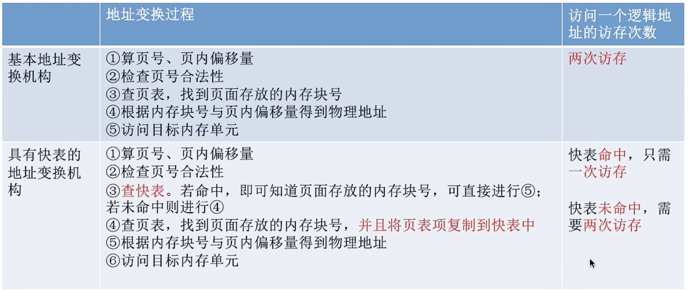

1 内存的基础知识
内存（Memory）是用于存放数据的硬件，程序执行前需要先被放到内存中才能被CPU处理。
程序员编写的代码会编译成CPU能够识别的二进制指令，指令告诉CPU要去内存的哪个地址存取数据，以及对数据做对应的处理。
内存中的地址分为物理地址和逻辑地址：
- 物理地址：绝对地址。
- 逻辑地址：相对地址。找到逻辑地址对应的起点，就能找到对应的物理地址。
装入操作，就是将逻辑地址装入内存，并得到实际的物理地址。装入有三种方式：
- 绝对装入：编译时如果知道程序将在内存中放在哪个位置，编译程序将产生绝对地址的目标代码，装入程序按照装入模块中的地址，将程序和数据装入内存，只适用于单道程序环境。
- 静态重定位：又称可重定位装入。编译链接后的装入模块地址从0开始，指令中使用的地址、数据存放的地址都是相对于起始地址的逻辑地址，可根据内存当前情况将装入模块装入到内存的适当位置，并在装入时对地址进行「重定位」，将逻辑地址转换为物理地址。特点是在一个作业装入内存时必须分配其所需要的全部内存空间，如果没有足够的内存，就不能装入该作业，作业一旦进入内存，在运行期间就不能移动和申请新的内存空间。
- 动态重定位：又称动态运行时装入。编译、链接后的装入模块地址是从0开始的，装入程序把装入模块装入内存后，并不会立即把逻辑地址转换为物理地址，而是把地址转换推迟到程序真正要执行时才进行。因此装入内存后所有地址依然是逻辑地址，这种方式需要一个重定位寄存器的支持。这种方式允许程序在内存中发生移动。
装入之前需要先进行链接，链接也有三种方式：
- 静态链接：程序运行之前先将各个目标模块及所需库函数连接成一个完整的可执行文件，之后不再拆开。
- 装入时动态链接：将各目标模块装入内存时，边装入边链接的链接方式。
- 运行时动态链接：程序执行中需要该目标模块时，才对它进行链接。其优点是便于修改和更新，便于实现对目标模块的共享。
2 内存管理的概念
- 操作系统负责内存空间的分配与回收。
- 操作系统提供某种技术从逻辑上对内存空间进行扩充。
- 操作系统提供地址转换功能，负责程序的逻辑地址与物理地址的转换。
- 操作系统提供保护功能，保证各个进程个在各自存储空间内运行，互不干扰。
2.1 覆盖技术
覆盖技术与交换技术是对内存空间进行扩充的技术。
覆盖技术：将程序分成多个段（模块），常用的段常驻内存，不常用的段在需要时才调入内存。
内存中分为一个固定区和若干覆盖区：
- 需要常驻内存的段放在固定区中，调入后除非运行结束，期间不再调出；
- 不常用的段放在覆盖区，需要用到时调入内存，用不到时调出内存。
缺点：覆盖结构必须由程序员声明好，操作系统完成自动覆盖，所以覆盖技术对用户不透明，增加了用户的编程负担，只用于早期操作系统。
2.2 交换技术
交换技术：内存空间紧张时，系统将内存中某些进程暂时换出到外存，把外存中某些已具备运行条件的进程换入内存。
- 中间调度（内存调度）主要就负责决定将哪个处于挂起的进程重新调入内存。
被换出进程的保存位置：
- 具有对换功能的操作系统中，通常把磁盘空间分为文件区和对换区两部分。文件区主要用于存放文件，追求存储空间的利用率，因此对文件区空间的管理采用离散分配方式；对换区用于存放换出的进程数据，只占磁盘空间的一小部分，追求换入换出速度，因此对对换区采用连续分配方式，从而其I/O速度比文件区更快。
什么时候交换进程：
- 许多进程运行且内存吃紧时换出，系统负荷降低了就暂停换出。
应该换出哪些进程：
- 阻塞的进程；
- 低优先级的进程；
- 有的系统还会考虑进程在内存的驻留时间…
注意：PCB会常驻内存，不会被换出！
3 内存空间的分配与回收
3.1 连续分配管理方式
3.1.1 单一连续分配
3.1.2 固定分区分配


3.1.3 动态分区分配

3.2 动态分区分配算法
- 首次适应算法
思想：每次从第低地址开始查找，找到第一个能满足大小的空闲分区。
实现：空闲分区以地址递增的次序排列，每次分配内存时顺序查找空闲分区链（或空闲分区表），找到大小能满足要求的第一个空闲分区。
- 最佳适应算法
思想：动态分区分配是一种连续分配方式，为各进程分配的空间必须是连续的一整片区域，因此为了保证大进程到来时有足够大小的连续空间，优先使用更小的空闲区。
实现：空闲分区按容量递增次序链接。每次分配内存时顺序查找空闲分区链，找到大小能满足要求的第一个空闲分区。
缺点：每次都选最小的分区进行分配，会留下越来越多的、很小的、难以利用的碎片。
- 最坏适应算法（最大适应算法）
思想：为了解决最佳适应算法的缺点，可以在每次分配时优先使用最大的连续空闲区，这样分配后剩余的空闲区就不会太小难以利用。
实现：空闲分区按容量递减次序链接。每次分配内存时顺序查找空闲分区链，找到大小能满足要求的第一个空闲分区。
缺点：每次都选最大的，会导致大分区被分割为小分区，导致后到来的需要大分区的进程没有连续的空闲分区可用。
- 邻近适应算法
思想：首次适应算法每次都从链头开始查找，可能导致低地址出现很多小的空闲区，而每次从低地址向高地址查找又都会经历这些小的空闲区，增加了查找开销。如果每次从上次查找结束的位置开始检索，就能解决上述问题。
实现：空闲分区以地址递增的次序排列（可排列成一个循环链表），每次分配从上次查找结束位置开始查找空闲分区链，找到大小能满足要求的第一个空闲分区。
缺点：首次适应算法虽然增加查找开销，但也让低地址部分更能被使用到，高地址部分的大分区就被保留下来。而邻近适应算法会使低地址和高地址被使用的概率相同，从而导致高地址部分的大分区更可能被占用从而划分为小分区，最终没有大分区可用。
3.3 基本分页管理方式
连续分配方式有其不可解决的缺点：
- 固定分区分配：缺乏灵活性，产生大量内部碎片，内存的利用率很低。
- 动态分区分配：会产生很多外部碎片，虽然可以用「紧凑」技术来处理，但是「紧凑」过程时间开销很大。
所以提出了非连续分配方式，即为用户分配的可以是一些分散的内存空间。
3.4 基本地址变换机构
基本地址变换机构借助进程的页表将逻辑地址转换为物理地址。
系统中通常会有一个页表寄存器（PTR），存放页表在内存中的起始地址F和页表长度M。进程未执行时，页表的始址和页表长度放在进程控制块（PCB）中，进程被调度时，操作系统内核把它们放到页表寄存器中。
在分页式存储管理中，只要确定了每个页面的大小，逻辑地址结构就确定了，因此页式管理中地址是一维的，即只要给出一个逻辑地址，系统就可以自动计算出页号、页内偏移量两个部分，并不需要显式告诉系统这个逻辑地址中页内偏移量的位数。
3.5 具有快表的地址变换机构
局部性原理：
- 时间局部性：如果执行了程序中某条指令，不久后这条指令很可能再次被执行；如果某个数据被访问过，不久后该数据可能再次被访问。（程序逻辑存在循环结构）
- 空间局部性：一旦程序访问某存储单元后，其附近的存储单元也很可能被访问。（数据在内存中连续存放）
快表，又称为联想寄存器（TLB），是一种访问速度比内存快很多的高速缓存存储，用来存放当前访问的若干页表项，以加速地址变换的过程。与之对应内存中的页表也称为慢表。

3.6 两级页表
单级页表存在的问题：
- 页表必须连续存放，因此当页表很大时，需要占用很多连续的页框。
- 没有必要让整个页表常驻内存，因为进程在一段时间内可能只访问某几个特定的页面。
3.7 基本分段管理方式
进程地址空间：按照程序自身逻辑关系划分为若干个段（Segment），每个段都有一个段名，每段从0开始编址。
内存分配规则：以段为单位进行分配，每个段在内存中占据连续空间，但各段之间可以不相邻。

3.8 段页式管理方式
4 虚拟内存
4.1 虚拟内存的基本概念
传统存储管理方式的缺点：
- 一次性：作业必须一次性全部装入内存后才能开始运行。这会使得作业很大时，不能全部装入内存，大作业无法运行；大量作业运行时，内存无法容纳所有作业，因此只有少量作业能运行，导致程序并发度下降。
- 驻留性：一旦作业被装入内存，就会一直驻留在内存直至作业运行结束，但事实上一个时间段只需要访问作业的一小部分数据即可运行，大量驻留内存浪费了内存资源。
虚拟内存的执行方式：
- 基于局部性原理，在程序装入时，可以将程序中很快会用到的部分装入内存，暂时用不到的部分留在外存，就可以让程序开始执行。
- 在执行过程中，当所访问的信息不在内存时，由操作系统负责将所需信息从外存调入内存，然后继续执行程序。
- 当内存空间不够时，操作系统负责将内存中暂时用不到的信息换出到外存。
虚拟内存的最大容量是由计算机的地址结构（CPU寻址范围）确定的，虚拟内存实际容量 = min(内存和外存容量之和，CPU寻址范围)。
虚拟内存主要有3个特征：
- 多次性：无需在作业运行时一次性全部装入内存，而是允许被分成多次调入内存。
- 对换性：在作业运行时无需一直常驻内存，允许在作业运行过程中将作业换入换出。
- 虚拟性：从逻辑上扩充了内存的容量，使用户看到的内存容量，远大于实际容量。
虚拟内存实现基础是离散分配的内存管理方式，包括请求分页存储管理，请求分段存储管理，请求段页式存储管理。
4.2 请求分页管理方式
请求分页管理与基本分页存储管理的主要区别：
- 在执行过程中，当所访问的信息不在内存时，由操作系统负责将所需信息从外存调入内存，然后继续执行程序。
- 当内存空间不够时，操作系统负责将内存中暂时用不到的信息换出到外存。

4.3 页面置换算法

4.4 页面分配策略
驻留集：请求分页存储管理中给进程分配的物理块的集合。
- 采用虚拟存储技术的系统中，驻留集大小一般小于进程的总大小。
- 驻留集太小，会导致缺页频繁，系统要花大量时间来处理缺页；驻留集太大，会导致多道程序并发度下降。
分配策略：
- 固定分配：操作系统为每个进程分配一组固定数目的物理块，在进程运行期间不再改变，即驻留集大小不变；
- 可变分配：先为每个进程分配一定数目的物理块，进程运行期间根据情况做适当的增加或减少，即驻留集大小可变。
置换策略：
- 局部置换：发生缺页时只能选进程自己的物理块进行置换；
- 全局置换：可以将操作系统保留的空闲物理块分配给缺页进程，也可以将别的进程持有的物理块置换到外存，再分配给缺页进程。
- 固定分配局部置换：系统为每个进程分配一定数量的物理块，整个运行期间都不改变。若进程运行过程中缺页，只能从该进程在内存中的页面中选出一块换出，然后再调入需要页面。缺点是很难在刚开始就确定为每个进程分配多少个物理块才算合理。
- 可变分配局部置换：刚开始为每个进程分配一定数量的物理块。若某进程发生缺页，只允许从该进程自己的物理块中选出一个换出到外存。如果进程中频繁发生缺页，系统就为该进程多分配几个物理块，直到缺页率减少；如果进程运行中缺页率特别低，则可适当减少分配给该进程的物理块。
- 可变分配全局置换：刚开始为每个进程分配一定数量的物理块。操作系统保持一个空闲物理块队列。当某进程发生缺页时，从空闲物理块中取出一块分配给该进程；若此时已无空闲物理块，则可选定一个未锁定的页面换出到外存，再将该物理块分配给缺页进程。采用这种策略时，只要一个进程发生缺页就能获得新的物理块，仅当空闲物理块用完时，系统才选择一个未锁定的页面调出。被选择调出的页可能是系统中任何一个进程的页，因此被选中的这个进程拥有的物理块减少，缺页率增加。
调入页面的时机策略：
- 预调页策略：根据局部性原理，一次调入若干个相邻页面可能比一次调入一个页面更高效。但如果提前调入的页面中大多数都没被访问过，则又是低效的，一般是通过预测不久之后可能访问到的页面将他们预先调入内存，因此这种策略主要用于进程的首次调入，由程序员指出应该调入哪些部分。
- 请求调页策略：进程在运行期间发现缺页时才将所缺页调入内存。这种策略调入的页面一定会被访问到，但是需要频繁进行磁盘I/O。
调入页面的位置：
- 系统拥有足够对换区空间：页面的调入、调出都是在内存与对换区之间进行，保证页面的调入、调出速度很快。进程运行前需要将进程相关的数据从文件区复制到对换区。
- 系统缺少足够的对换区空间：凡是不会被修改的数据都直接从文件区调入，由于这些页面不会被修改，换出时不必写回磁盘，下次需要还从文件区调入即可。对于可能修改的部分，换出时写回磁盘对换区，下次需要时再从对换区调入。
- UNIX方式：运行之前进程有关的数据全部放在文件区，未使用过的页面都可从文件区调入。若被使用过的页面需要换出，则写回对换区，下次需要时从对换区调入。
抖动（颠簸）现象：指刚刚换出的页面马上又要换入内存，刚刚换入的页面马上又要换出外存，这种频繁的页面调度行为。产生抖动现象的原因主要是进程频繁访问的页面数目高于可用的物理块数，即分配给进程的物理块不够。
参考资料：王道计算机考研 操作系统